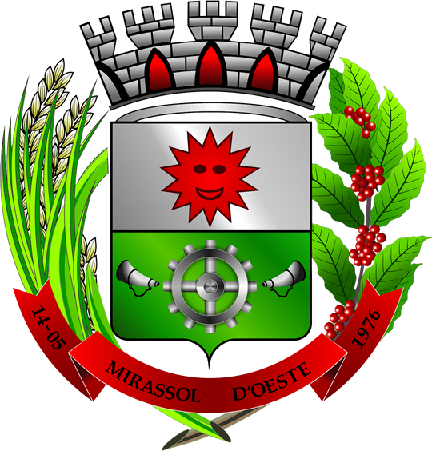
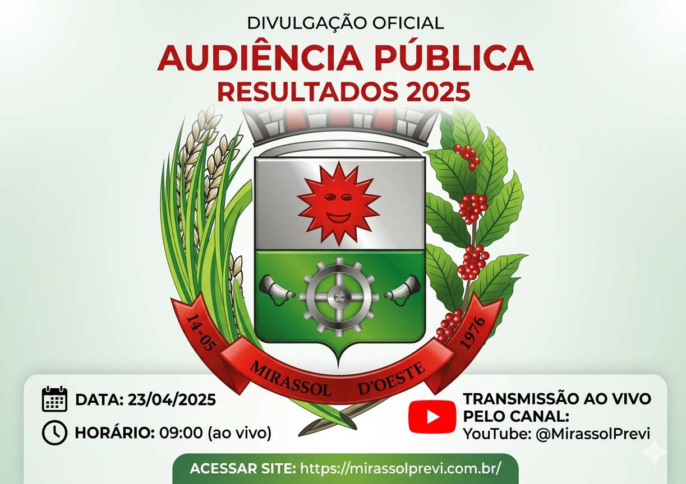

Fundo Municipal de Previdência Social dos Servidores de Mirassol D’Oeste - MT

O Mirassol-Previ realizará Audiência Pública para apresentação dos resultados referentes ao exercício de 2025, reafirmando seu compromisso com a transparência, a responsabilidade na gestão dos recursos previdenciários e o diálogo com a sociedade.
O evento será realizado no dia 23 de abril, com transmissão ao vivo pelo canal oficial do Mirassol-Previ no YouTube.
A Audiência Pública é um importante instrumento de transparência e controle social, permitindo que segurados, servidores e toda a população acompanhem de forma clara e acessível os resultados da gestão previdenciária.
← Voltar para a página inicial